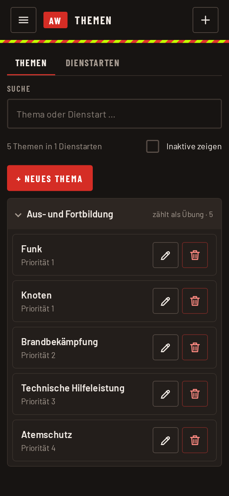

Themen und Dienstarten
Beim Erfassen wählt ihr eine Dienstart (zum Beispiel „Übung“ oder „Sitzung“) und ein Thema. Beide Listen pflegen Admin und Abteilungsadmin im Menü unter „Einstellungen“ → „Themen verwalten“. Oben wählt ihr die Abteilung, für die die Listen gelten, und könnt suchen.

Dienstarten
Jede Dienstart hat eine Kategorie. Sie entscheidet, wie die Auswertung zählt:
- Übung: zählt als Übung und fließt in das Stundensoll ein.
- Dienst: zum Beispiel Sitzung oder Versammlung. Zählt nicht als Übung.
- Sonstiges: alles andere.
Mit „Gilt für“ begrenzt ihr eine Dienstart auf eine Abteilung. Ohne Angabe gilt sie für alle.
Themen
Ein Thema gehört zu einer Abteilung und einer Dienstart. Die Anzeigepriorität bestimmt die Reihenfolge in der Auswahl: Was oft gebraucht wird, bekommt eine kleine Zahl und steht oben.
Ein Thema, das nicht mehr gebraucht wird, setzt ihr auf inaktiv, statt es zu löschen. Es verschwindet aus der Auswahl, alte Termine behalten es. Mit „Inaktive zeigen“ seht ihr es wieder.
Tags
Mit Tags lassen sich Zusatzinfos zu einer Person im Termin hinterlegen, zum Beispiel „Praktikant“. Sie werden beim Namen der Person im Termin angehakt. Die Liste der Tags pflegt der Admin unter „Einstellungen“ → „Tags verwalten“.